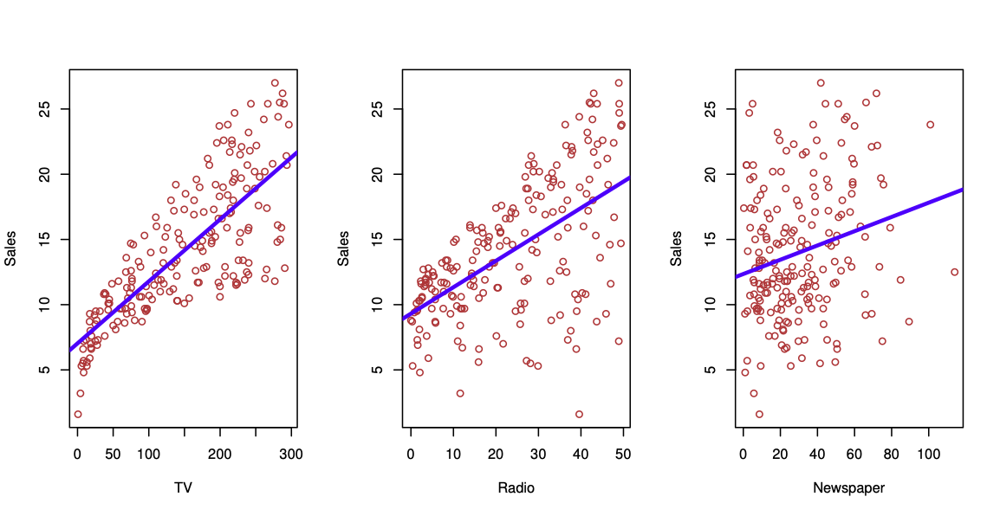
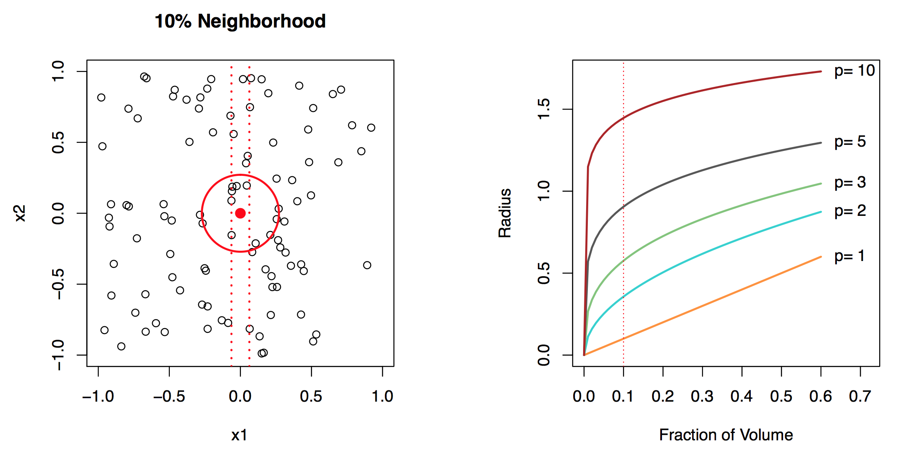
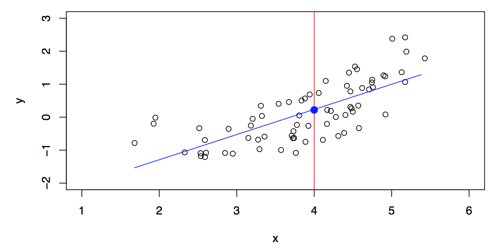
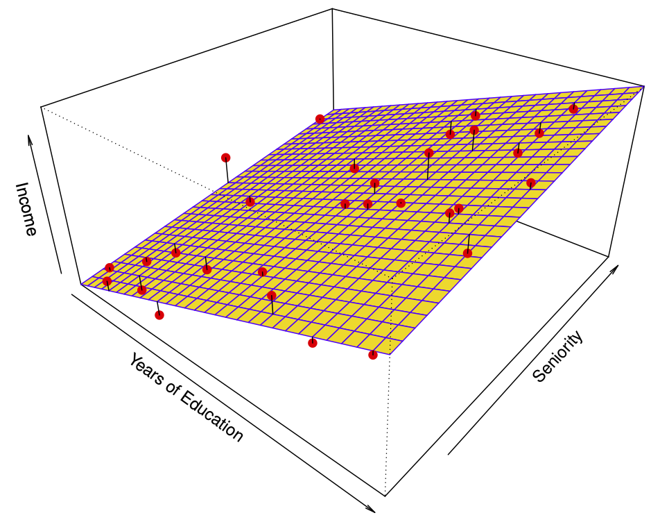
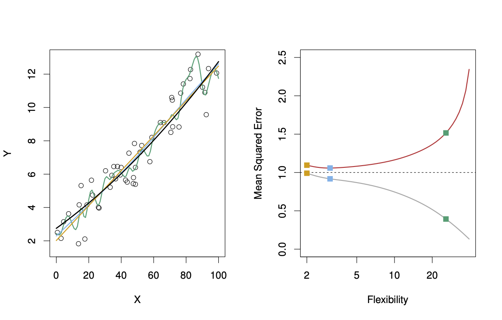

import numpy as np
import pandas as pd
import statsmodels.formula.api as smf
def generate_data(n_samples=100, b0=0, b1=-1, b2=0, b3=10, b12=0, b13=0, b23=0, b123=0, noise_std=1) -> pd.DataFrame:
"""
Generate data for the linear formula y ~ b0 + b1*x1 + b2*x2 + b3*x3 + b12*x1*x2 + b13*x1*x3 + b23*x2*x3 + b123*x1*x2*x3.
Args:
n_samples (int): Number of samples to generate.
b0 (float): Coefficient for the intercept.
b1 (float): Coefficient for x1.
b2 (float): Coefficient for x2.
b3 (float): Coefficient for x3.
b12 (float): Coefficient for the interaction term x1*x2.
b13 (float): Coefficient for the interaction term x1*x3.
b23 (float): Coefficient for the interaction term x2*x3.
b123 (float): Coefficient for the interaction term x1*x2*x3.
noise_std (float): Standard deviation of the Gaussian noise added to y.
Returns:
pd.DataFrame: A DataFrame containing the generated data with columns ['x1', 'x2', 'x3', 'y'].
"""
np.random.seed(42) # For reproducibility
x1 = np.random.uniform(0, 1, n_samples)
x2 = np.random.uniform(0, 1, n_samples)
x3 = np.random.uniform(0, 1, n_samples)
y = (b0 + b1*x1 + b2*x2 + b3*x3 + b12*x1*x2 + b13*x1*x3 + b23*x2*x3 + b123*x1*x2*x3 +
np.random.normal(0, noise_std, n_samples))
data = pd.DataFrame({'y': y, 'x1': x1, 'x2': x2, 'x3': x3})
return data
def fit_ols_model(formula, data) -> dict:
"""
Fit an OLS model using the given formula and data, and print the results.
Args:
formula (str): The formula for the OLS model.
data (pd.DataFrame): The data frame containing the variables.
Returns:
dict: A dictionary containing the p-values, estimates, confidence intervals, and AIC value.
"""
mod_0 = smf.ols(formula=formula, data=data).fit()
p = mod_0.pvalues.iloc[1]
estimate = mod_0.params.iloc[1]
conf_int = mod_0.conf_int().iloc[1]
aic_value = mod_0.aic
print(f"p-values: {p}")
print(f"estimate: {estimate}")
print(f"conf_int: {conf_int}")
print(f"aic: {aic_value}")26 Regression
26.1 Supervised and Unsupervised Learning
Two important types: supervised and unsupervised learning. There is even more, e.g., semi-supervised learning.
26.1.1 Starting point
- Outcome measurement \(Y\) (dependent variable, response, target).
- Vector of \(p\) predictor measurements \(X\) (inputs, regressors, covariates, features, independent variables).
- Training data \((x_1, y1), \ldots ,(x_N, y_N)\). These are observations (examples, instances) of these measurements.
In the regression problem, \(Y\) is quantitative (e.g., price, blood pressure). In the classification problem, \(Y\) takes values in a finite, unordered set (e.g., survived/died, digit 0-9, cancer class of tissue sample).
26.1.2 Philosophy
It is important to understand the ideas behind the various techniques, in order to know how and when to use them. One has to understand the simpler methods first, in order to grasp the more sophisticated ones. It is important to accurately assess the performance of a method, to know how well or how badly it is working (simpler methods often perform as well as fancier ones!) This is an exciting research area, having important applications in science, industry and finance. Statistical learning is a fundamental ingredient in the training of a modern data scientist.
26.1.3 Supervised Learning
Objectives of supervised learning: On the basis of the training data we would like to:
- Accurately predict unseen test cases.
- Understand which inputs affect the outcome, and how.
- Assess the quality of our predictions and inferences.
Note: Supervised means \(Y\) is known.
Exercise 26.1
- Do children learn supervised?
- When do you learn supervised?
- Can learning be unsupervised?
26.1.4 Unsupervised Learning
No outcome variable, just a set of predictors (features) measured on a set of samples. The objective is more fuzzy—find groups of samples that behave similarly, find features that behave similarly, find linear combinations of features with the most variation. It is difficult to know how well your are doing. Unsupervised learning different from supervised learning, but can be useful as a pre-processing step for supervised learning. Clustering and principle component analysis are important techniques.
Unsupervised: \(Y\) is unknown, there is no \(Y\), no trainer, no teacher, but: distances between the inputs values (features). A distance (or similarity) measure is necessary.
26.1.4.0.1 Statistical Learning
We consider supervised learning first.

Sales figures from a marketing campaign, see Figure 26.1. Trend shown using regression. First seems to be stronger than the third.
Can we predict \(Y\) = Sales using these three? Perhaps we can do better using a model \[ Y = Sales \approx f(X_1 = TV, X_2 = Radio, X_3= Newspaper) \] modeling the joint relationsship.
Here Sales is a response or target that we wish to predict. We generically refer to the response as \(Y\). TV is a feature, or input, or predictor; we name it \(X_1\). Likewise name Radio as \(X_2\), and so on. We can refer to the input vector collectively as \[ X = \begin{pmatrix} X_1\\ X_2\\ X_3 \end{pmatrix} \]
Now we write our model as \[ Y = f(X) + \epsilon \] where \(\epsilon\) captures measurement errors and other discrepancies.
What is \(f\) good for? With a good \(f\) we can make predictions of \(Y\) at new points \(X = x\). We can understand which components of \(X = (X_1, X_2, \ldots X_p)\) are important in explaining \(Y\), and which are irrelevant.
For example, Seniority and Years of Education have a big impact on Income, but Marital Status typically does not. Depending on the complexity of \(f\), we may be able to understand how each component \(X_j\) of \(X\) affects \(Y\).
26.2 Linear Regression
26.2.1 The main ideas of fitting a line to data (The main ideas of least squares and linear regression.)
- Video: The main ideas of fitting a line to data (The main ideas of least squares and linear regression.)
26.2.1.1 Linear Regression
26.2.1.2 Multiple Regression
- Video: Multiple Regression, Clearly Explained
26.2.1.3 A Gentle Introduction to Machine Learning
26.2.1.4 Regression Function

Consider Figure 26.2. Is there an ideal \(f(X)\)? In particular, what is a good value for \(f(X)\) at any selected value of \(X\), say \(X = 4\)? There can be many \(Y\) values at \(X=4\). A good value is \[ f(4) = E(Y |X = 4). \]
\(E(Y |X = 4)\) means expected value (average) of \(Y\) given \(X = 4\).
The ideal \(f(x) = E(Y |X = x)\) is called the regression function. Read: The regression function gives the conditional expectation of \(Y\) given \(X\).
The regression function \(f(x)\) is also defined for the vector \(X\); e.g., \(f(x) = f(x_1, x_2, x_3) = E(Y | X_1 =x_1, X_2 =x_2, X_3 =x_3).\)
26.2.2 Optimal Predictor
The regression function is the ideal or optimal predictor of \(Y\) with regard to mean-squared prediction error: It means that \(f(x) = E(Y | X = x)\) is the function that minimizes \[ E[(Y - g(X))^2|X = x] \] over all functions \(g\) at all points \(X = x\).
26.2.2.1 Residuals, Reducible and Irreducible Error
At each point \(X\) we make mistakes: \[ \epsilon = Y-f(x) \] is the residual. Even if we knew \(f(x)\), we would still make errors in prediction, since at each \(X=x\) there is typically a distribution of possible \(Y\) values as is illustrated in Figure 26.2.
For any estimate \(\hat{f}(x)\) of \(f(x)\), we have \[ E\left[ ( Y - \hat{f}(X))^2 | X = x\right] = \left[ f(x) - \hat{f}(x) \right]^2 + \text{var}(\epsilon), \] and \(\left[ f(x) - \hat{f}(x) \right]^2\) is the reducible error, because it depends on the model (changing the model \(f\) might reduce this error), and \(\text{var}(\epsilon)\) is the irreducible error.
26.2.2.2 Local Regression (Smoothing)
Typically we have few if any data points with \(X = 4\) exactly. So we cannot compute \(E(Y |X = x)\)! Idea: Relax the definition and let \[ \hat{f}(x)= Ave(Y|X \in \cal{N}(x)), \] where \(\cal{N} (x)\) is some neighborhood of \(x\), see Figure 26.3.

Nearest neighbor averaging can be pretty good for small \(p\), i.e., \(p \leq 4\) and large-ish \(N\). We will discuss smoother versions, such as kernel and spline smoothing later in the course.
26.2.3 Curse of Dimensionality and Parametric Models

Local, e.g., nearest neighbor, methods can be lousy when \(p\) is large. Reason: the curse of dimensionality, i.e., nearest neighbors tend to be far away in high dimensions. We need to get a reasonable fraction of the \(N\) values of \(y_i\) to average to bring the variance down—e.g., 10%. A 10% neighborhood in high dimensions need no longer be local, so we lose the spirit of estimating \(E(Y |X = x)\) by local averaging, see Figure 26.4. If the curse of dimensionality does not exist, nearest neighbor models would be perfect prediction models.
We will use structured (parametric) models to deal with the curse of dimensionality. The linear model is an important example of a parametric model: \[ f_L(X) = \beta_0 + \beta_1 X_1 + \ldots + \beta_p X_p. \] A linear model is specified in terms of \(p + 1\) parameters \(\beta_1, \beta_2, \ldots, \beta_p\). We estimate the parameters by fitting the model to . Although it is almost never correct, a linear model often serves as a good and interpretable approximation to the unknown true function \(f(X)\).
The linear model is avoiding the curse of dimensionality, because it is not relying on any local properties. Linear models belong to the class of approaches: they replace the problem of estimating \(f\) with estimating a fixed set of coefficients \(\beta_i\), with \(i=1,2, \ldots, p\).


A linear model \[ \hat{f}_L(X) = \hat{\beta}_0 + \hat{\beta}_1 X \] gives a reasonable fit, see Figure 26.5. A quadratic model \[ \hat{f}_Q(X) = \hat{\beta}_0 + \hat{\beta}_1 X + \hat{\beta}_2 X^2 \] gives a slightly improved fit, see Figure 26.6.
Figure 26.7 shows a simulated example. Red points are simulated values for income from the model \[ income = f(education, seniority) + \epsilon \] \(f\) is the blue surface.


The linear regression model \[ \hat{f}(education, seniority) = \hat{\beta}_0 + \hat{\beta}_1 \times education + \hat{\beta}_2 \times seniority \] captures the important information. But it does not capture everything. More flexible regression model \[ \hat{f}_S (education, seniority) \] fit to the simulated data. Here we use a technique called a thin-plate spline to fit a flexible surface. Even more flexible spline regression model \[ \hat{f}_S (education, seniority) \] fit to the simulated data. Here the fitted model makes no errors on the training data! Also known as overfitting.


26.2.3.1 Trade-offs
- Prediction accuracy versus interpretability: Linear models are easy to interpret; thin-plate splines are not.
- Good fit versus over-fit or under-fit: How do we know when the fit is just right?
- Parsimony (Occam’s razor) versus black-box: We often prefer a simpler model involving fewer variables over a black-box predictor involving them all.
The trad-offs are visualized in Figure 26.11.

26.2.4 Assessing Model Accuracy and Bias-Variance Trade-off



Suppose we fit a model \(f(x)\) to some training data \(Tr = \{x_i, y_i \}^N_1\), and we wish to see how well it performs. We could compute the average squared prediction error over \(Tr\): \[ MSE_{Tr} = Ave_{i \in Tr}[y_i - \hat{f}(x_i)]^2. \] This may be biased toward more overfit models. Instead we should, if possible, compute it using fresh test data \(Te== \{x_i, y_i \}^N_1\): \[ MSE_{Te} = Ave_{i \in Te}[y_i - \hat{f}(x_i)]^2. \] The red curve, which illustrated the test error, can be estimated by holding out some data to get the test-data set.
26.2.4.1 Bias-Variance Trade-off
Suppose we have fit a model \(f(x)\) to some training data \(Tr\), and let \((x_0, y_0)\) be a test observation drawn from the population. If the true model is \[ Y = f(X) + \epsilon \qquad \text{ with } f(x) = E(Y|X=x), \] then \[ E \left( y_0 - \hat{f}(x_0) \right)^2 = \text{var} (\hat{f}(x_0)) + [Bias(\hat{f}(x_0))]^2 + \text{var}(\epsilon). \tag{26.1}\]
Here, \(\text{var}(\epsilon)\) is the irreducible error. The reducible error consists of two components:
- \(\text{var} (\hat{f}(x_0))\) is the variance that comes from different training sets. Different training sets result in different functions \(\hat{f}\).
- \(Bias(\hat{f}(x_0)) = E[\hat{f}(x_0)] - f(x_0)\).
The expectation averages over the variability of \(y_0\) as well as the variability in \(Tr\). Note that \[ Bias(\hat{f}(x_0)) = E[\hat{f}(x_0)] - f(x_0). \] Typically as the flexibility of \(\hat{f}\) increases, its variance increases (because the fits differ from training set to trainig set), and its bias decreases. So choosing the flexibility based on average test error amounts to a bias-variance trade-off, see Figure 26.15.

If we add the two components (reducible and irreducible error), we get the MSE in Figure 26.15 as can be seen in Equation 26.1.
26.3 Multiple Regression
26.4 R-squared
26.4.1 R-Squared in Simple Linear Regression
In simple linear regression, the relationship between the independent variable \(X\) and the dependent variable \(Y\) is modeled using the equation:
\[ Y = \beta_0 + \beta_1 X + \epsilon \]
Here, \(\beta_0\) is the intercept, \(\beta_1\) is the slope or regression coefficient, and \(\epsilon\) is the error term.
Definition 26.1 (R-Squared (\(R^2\))) \(R^2\) is a measure of how well the regression model explains the variance in the dependent variable. It is calculated as the square of the correlation coefficient (\(r\)) between the actual values \(Y\) and the predicted values \(\hat{Y}\) from the regression model. It ranges from 0 to 1, where:
- 1 indicates that the regression predictions perfectly fit the data.
- 0 indicates that the model does not explain any of the variability in the target data around its mean.
In simple linear regression, where there is one independent variable \(X\) and one dependent variable \(Y\), the R-squared (\(R^2\)) is the square of the Pearson correlation coefficient (\(r\)) between the observed values of the dependent variable and the values predicted by the regression model. That is, in simple linear regression, we have
\[
R^2 = r^2.
\]
This equivalence holds specifically for simple linear regression due to the direct relationship between the linear fit and the correlation of two variables. In multiple linear regression, while \(R^2\) still represents the proportion of variance explained by the model, it is not simply the square of a single correlation coefficient as it involves multiple predictors.
- Video: R-squared, Clearly Explained
26.5 Assessing Confounding Effects in Multiple Regression
Confounding is a bias introduced by the imbalanced distribution of extraneous risk factors among comparison groups (Wang 2007). spotpython provides tools for assessing confounding effects in multiple regression models.
Example 26.1 (Assessing Confounding Effects in Multiple Regression with spotpython) Consider the following data generation function generate_data and the fit_ols_model function to fit an ordinary least squares (OLS) regression model.
These functions can be used to generate data and fit an OLS model. Here we use the model \[ y = f(x_1, x_2, x_3) + \epsilon = x_1 + 10 x_3 + \epsilon. \] We set up the basic model \(y_0 = f_0(x_1)\) and analyze how the model fit changes when adding \(x_2\) and \(x_3\) to the model. If the \(p\)-values are decreasing by adding a variable, this indicates that the variable is relevant for the model. Similiarly, if the \(p\)-values are increasing by removing a variable, this indicates that the variable is not relevant for the model.
data = generate_data(b0=0, b1=1, b2=0, b3=10, b12=0, b13=0, b23=0, b123=0, noise_std=1)
fit_ols_model("y ~ x1", data)
fit_ols_model("y ~ x1 + x2", data)
fit_ols_model("y ~ x1 + x3", data)
fit_ols_model("y ~ x1 + x2 + x3", data)p-values: 0.34343741859526267
estimate: 1.025306391110114
conf_int: 0 -1.111963
1 3.162575
Name: x1, dtype: float64
aic: 517.6397392012537
p-values: 0.3637511850778461
estimate: 0.9810502049698089
conf_int: 0 -1.152698
1 3.114798
Name: x1, dtype: float64
aic: 518.1426513151566
p-values: 4.9467606744218404e-05
estimate: 1.4077923469421165
conf_int: 0 0.750106
1 2.065479
Name: x1, dtype: float64
aic: 282.73524524532
p-values: 4.849840959643538e-05
estimate: 1.4159292625696247
conf_int: 0 0.755494
1 2.076364
Name: x1, dtype: float64
aic: 284.34665447613634The function fit_all_lm() simplifies this procedure. It can be used to fit all possible linear models with the given data and print the results in a systematic way for various combinations of variables.
from spotpython.utils.stats import fit_all_lm, plot_coeff_vs_pvals, plot_coeff_vs_pvals_by_included
res = fit_all_lm("y ~ x1", ["x2", "x3"], data)
print(res["estimate"])The basic model is: y ~ x1
The following features will be used for fitting the basic model: Index(['x2', 'x1', 'y', 'x3'], dtype='object')
p-values: 0.34343741859526267
estimate: 1.025306391110114
conf_int: 0 -1.111963
1 3.162575
Name: x1, dtype: float64
aic: 517.6397392012537
Combinations: [('x2',), ('x3',), ('x2', 'x3')]
variables estimate conf_low conf_high p aic n
0 basic 1.025306 -1.111963 3.162575 0.343437 517.639739 100
1 x2 0.981050 -1.152698 3.114798 0.363751 518.142651 100
2 x3 1.407792 0.750106 2.065479 0.000049 282.735245 100
3 x2, x3 1.415929 0.755494 2.076364 0.000048 284.346654 100Interpreting the results, we can see that the \(p\)-values decrease when adding \(x_3\) (as well as both \(x_2\) and $x_3) to the model, indicating that \(x_3\) is relevant for the model. Adding only \(x_2\) does not significantly improve the model fit.
In addition to the textural output, the function plot_coeff_vs_pvals_by_included() can be used to visualize the coefficients and p-values of the fitted models.
plot_coeff_vs_pvals_by_included(res)Figure 26.16 shows the coefficients and p-values for different models. Because \(y\) depends on \(x1\) and \(x3\), the p-value much smaller if \(x3\) is included in the model as can be seen in the right plot in Figure 26.16. The left plot shows that including \(x2\) in the model does not significantly improve the model fit.